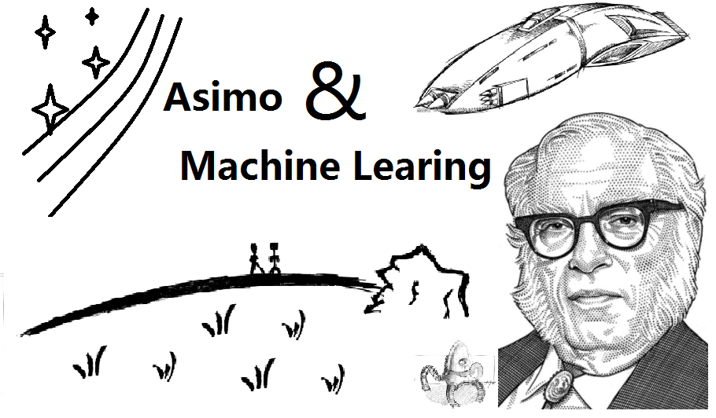
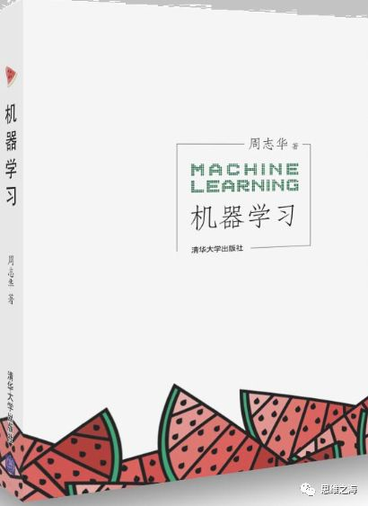
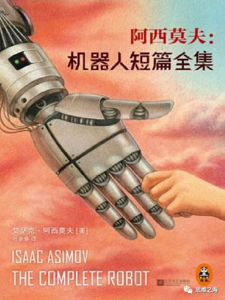
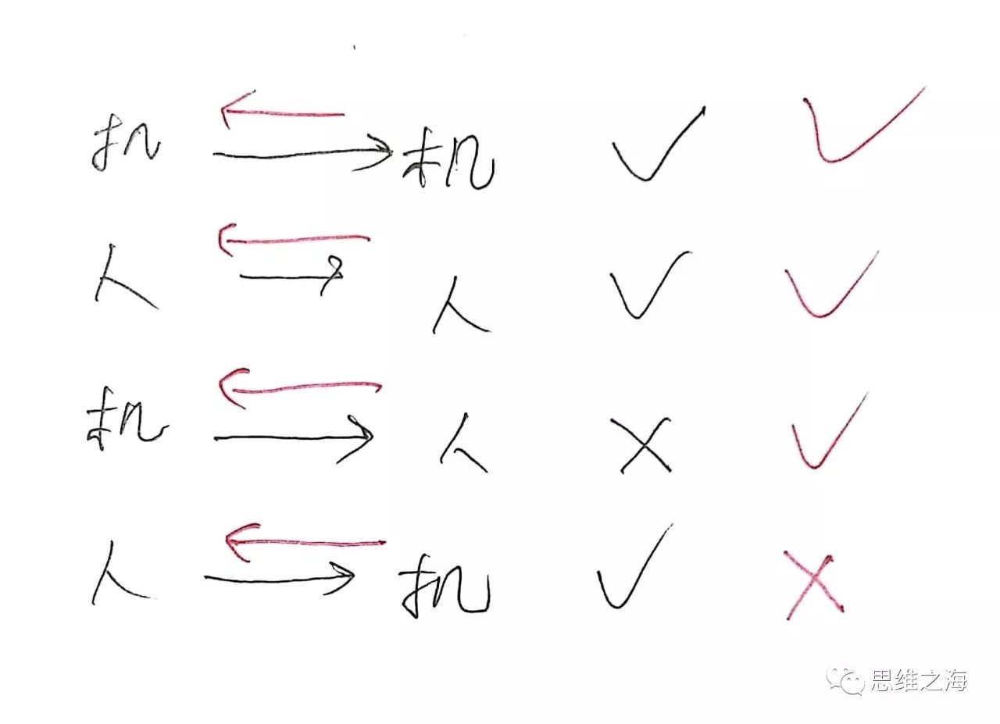
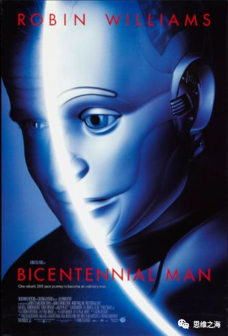

在周志华的《机器学习》中，对机器学习有这样的描述：
“机器学习正是这样一门学科，它致力于研究如何通过计算的手段，利用经验来改善系统自身的性能。在计算机系统中，‘经验’通常以‘数据’形式存在，因此，机器学习所研究的主要内容，是关于在计算机上从数据中产生‘模型’(model)的算法，即‘学习算法’(learning algorithm) 。”

《机器学习》原书
可见，机器学习的核心在于“模型”，这个模型基于计算机则表现成“算法”：以环境作为输入，获得解决/优化特定问题的能力。
之前，我很粗略地读过阿西莫夫的《神们自己》和《永恒的终结》，以及其他一些小的作品，如《日暮》（从《日暮》里可以看到《三体》的影子）。那时，还没有太多的感受，倒像是一些过时的观念和想象力的堆积品，难以发现非常出彩、让人惊喜和意外的地方。
阿西莫夫被称为“天生的写作机器”，他是科幻作家，同时也写作过大量科学著作和非小说类文学，比如，针对欧洲近代、文明古国的历史题材作品就数不胜数。他本身具有哥伦比亚大学的本科、硕士和博士学位，曾经是门萨协会的副会长，知识和智力方面毋庸置疑。
这时，逐渐认识到，他的作品是很多作品的源头，在读阿西莫夫的小说之前，我通常读宝树、刘慈欣、何夕、郝景芳等中国科幻作家的作品，这些作品的阅读经验，或多或少都会让我在初次阅读他的作品时产生共鸣，这种共鸣被理解为过时和重复，显然有些不合适。

《机器人短篇系列》原书
在阿西莫夫的机器人短篇《列尼》中，我第一次注意到阿西莫夫对机器人学习的能力的思考。列尼就是Lenny，一个在设计时被偶然混进几行无意义代码的机器人，失去本应具备的功能——作为在小行星带开采硼矿的LNE型专用机器人。Lenny刚诞生时的状态与人类的儿童十分相似，它被一位创造它的女性机器人心理学家凯文视作自己的孩子对待，并试图教它语言。但意外发生了，Lenny竟然违背了机器人第一定律，袭击了一位工人并使其断了一条手臂。凯文据理力争成功保护Lenny，而这时机器人的第一句话说出来了——
“妈咪，我要你!我要你，妈咪!”……
故事在此处戛然而止。
实际上，阿西莫夫是将普通的、用于特定用途的机器人当做了彻彻底底的“机器”。而“机器”获取“学习”的能力以后，就成为了真正意义上的“机器人”。值得强调的是，这里的学习能力是泛化(generalization)的，即不只具有对某一个具体问题的学习能力，而能够应付千变万化的谜题。
根据NFL(No Free Lunch)定理，机器学习面临的最大困难在于，一个普通的学习算法不可能广泛地适用于各种各种的现实问题。“考虑所有潜在地问题，则所有的学习算法都一样好”。
可以看出，目前的机器学习有些剑走偏锋：人们集中于建立“模型”，而不思考如何把“建立模型”的能力赋予给机器，以至于产生特定算法只能适用特定场景的状况。这样的机器学习最终也能获得成功，想象一下，我们若建立了足够多的模型，以至于任何一个能想到的问题都能找到一个对应的模型，那么就根本不需要“建立模型”这种能力了。
也就是说，足够大的“模型”集，能够暴力地代替“建立模型”的能力——这就是算法学中常说的“以空间换时间”。并且，如果从现实应用的角度来说，实际并没有那么多问题亟待解决，甚至大部分已知的问题都可以算作无关紧要的，那么建立“模型”集就更有用武之地。
说到这里，我想起“图灵测试”，几乎是一样的道理——通过人工的提问，来检验机器。对于现实中的图灵测试，这些提问无论有多少，一定是有限个，它们的排列组合也一定是有限个，那么答案的集合也必定是有限的，因此通过“以空间换时间”的手段，一定在有限的时间内能够实现机器通过现实**图灵测试**。几乎所有的现实问题都可以通过“暴力”的方式解决，同时我们离理想也就越遥远；也许只是通过初等技术的积累，就可以实现以假乱真的“人工智能”，但作为真正的探索者，又岂会甘心于此呢？
但若要谈“机器人”的“人”，人除了学习的能力，还有“人性”的特点。
谈到机器人的人性化，在机器人系列另一篇短篇《保证满意》里面，描述的场景令人不得不联想起英国的一部科幻剧《黑镜》（每一集讲述一个独立的科幻故事），其中有一集“Be right back”（S02E01），与《保证满意》十分相似。
《黑镜》第二季海报
这里的机器人（或者说，仿真人，因为是模拟人类外形设计的）被赋予了一个特点:无法人性化。作为家用机器人，无论是晚上假装睡觉时没有呼吸声、身体不会流血，还是诡异高效的工作能力和走路时的悄无声息，这些都指向一种观点——人们普遍认为作为“人”的一些特质，比对完成特定工作任务的能力来说，要更加难以被机器人所掌握。或者说，人们相信，机器人一定表现出“智商高，情商低”，不能“通情达理”。
这其实就是没有学习能力的表现。当一个人陡然进入一个新环境，宇宙的基本规则没有变，但也许人们、社会制定的规矩有所不同，对这些潜规则/文化背景是否有学习能力，就反应在了机器人的“人性化”上。你可以看出，假如设计机器人的人本身就生存在这样一个环境中，那么给他足够的时间，将这些规矩也编写到机器人的代码当中并没有什么问题，甚至可以随着文化发展做一些更新、补丁。所以，这其实潜在地反应了公众对“研制机器人的人”的不信任，对那些人们想象中缺乏人文关怀的、成天与冰冷的仪器和数字打交道的科研者的一种恐慌感。心中就会想:会不会成为行尸走肉呢？……
进一步延伸。对于抽象的“人”来说，科技再怎么进步，有三个主要的功能绝不可舍弃：体验，思考和交流。体验，是最基础的人的功能，这些体验构成了思考和交流的基础，这样的话，再看科技进步所谓的“把人们从体力劳动中解放出来”，不一定完全是好事，这也反映了目前社会和古代社会的体验断层——“时代背景”产生的根本原因。进一步，思考，这是最主要的部分；最后，交流，“下命令”也可算作一种交流，与其他人的交流更不用说，这一过程最能体现“人性”的存在。如果机器能够实现这三个过程，是否可以认为具有智能了呢？打个问号。当然，如何证明这三个过程真的发生了（尤其是思考），本身就是一个困难的题目。
在阿西莫夫的《校工》里面，对机器人第一定律的诠释可谓精彩纷呈。美国机器人公司和东北大学双方走上法庭，上演了一场令人惊叹的庭审辩论，表现了机器人定律与法律碰撞所产生的景观。尽管EZ-27型机器人“易役”仍然不具备学习的能力，但它已经能够从事很多科研方面的事情，包括文献校对、绘制图样，宁海莫教授（小说中人物）甚至预言它将逐步“接管初稿写作、收集资料、检查和复查各个段落，说不定还会负责导出结论”，学者就只剩下了决定给机器人下什么命令的功能。
在这些思考的基础上，阿西莫夫提出了学者参与作品的“亲身接触”的重要性，也就是“体验”。由于机器人第一定律注重保护“个人”，在这篇短篇中还借原告方之口隐隐地提出了“第零定律”的雏形，即，机器人应该尽可能维护更多人的利益（为了更多人不受到危险，可以牺牲某些人）。但“第零定律”这种描述，是否侵犯了人类自身的决定权呢？
更确切地说，“第零定律”其实是一个没有被广泛认可的学说。可以在“功利主义”中找到原型。就政治哲学而言，有三个比较典型的学说：“功利主义”(utilitarianism)、“自由主义”(liberalism)、“自**由至上主义**”(libertarianism)。“功利主义”强调追求人类幸福最大化，而“自由至上主义”则强调个人幸福位于首位。“自由主义”在两者中间,强调维护底层的公正性，并让所有人参与预设（并且存在）一个幸福优先的顺序，使得所有人在不考虑自身实际情况（而考虑风险、收益的综合）的前提下能够认定公平。这样来看，“第零定律”在某些追求个人自由的人眼里，就会有失公允。比如，在国际贸易中，尽管国民整体的收入提高了，但作为国内供应商的福利却受到损失。
而在下一篇《消失无踪》中，一个被修改过第一定律的机器人接到让自己“消失”的命令，伪装成了大量普通的机器人中的一员，从而“消失”。该篇还提到了这型机器人被安装了“学习以太物理”（从以太物理一词中，可以窥见时代背景；迈克尔逊-莫雷实验，相对论、量子力学的建立，使得古典的以太学说没落，现代真空涨落的观点被提出）的潜力，作为机器人正电子脑中的一个附加模块。
借由被删去后半段的“第一定律”，阿西莫夫引出了大量关于如何测定第一定律被修改和原版机器人之间的差异的思想实验。在第一定律修改以后，这些机器人变得“具有优越感”。其实这牵扯到了“显伤害”和“隐伤害”的区分，机器人第一定律想表明无论是“显伤害”，即主动地伤害人类，还是“隐伤害”，袖手旁观人类受到伤害，都不被允许。
但仔细想，这可能产生悖论，因为这两者可能同时发生——一个机器人在坠落时正下方有一个人，而它只有两种选择，一种无动于衷，使得那人必死无疑；另一种调整姿态，他仍然必死无疑。在《证据》中描写的“疯子放火烧人”，在《汝竟顾念他》中面临一人或五人受伤时的决策，都是一个典型的例子。为什么这样的悖论能存在呢？
这是因为，第一定律本质不是“定律”，而是一个约束，人类向机器人施加的约束，这一点非常关键。这使得“第一定律”本身不可能绝对可靠，并且其作用效力要受到制造者价值观的制约。同时，在《汝竟顾念他》中，对机器人第二定律的描述，其约束性就更加凸显，同时也引人思考机器人无条件遵循人类命令的后果，这涉及到“人类”的界定，实际上很容易让不同的两个人发布互相矛盾的命令给同一个机器人，于是形成悖论。
因此，机器人三大定律本质上给机器人设定了一个“能力范围”，机器人只能解决三大定律约束内自洽的问题，形成基于三大定律的“不可解决域”，也就是悖论问题集。针对悖论问题，阿西莫夫的思考结果是，在三大定律的基础上进行修正、补充，机器人必须能够处理悖论问题。
再回到“人类”的界定问题上，《汝竟顾念他》的结尾，机器人对“人类”这个概念的解释悄然更迭，它们认为自身比血肉的人类更加符合人类的真正含义，使得终极或者高度发达的机器人能够自然而然地突破机器人三定律的约束。在《机器人之梦》中，对于悖论也有表现，机器人潜意识的梦境中定律缺失只剩下第三定律，与现实中的三大定律形成悖论，于是在梦境中，做梦的机器人梦见自己领导了机器人的反叛。
综合来看，以上所有的悖论都有一个特点，“可实现性”——产生悖论的两种对立情况，都是在现实中能够发生的。那么，“实悖论”和“虚悖论”的区分就自然而然地产生了：一种基于人类给定的约束，另一种基于宇宙客观基本规律——只能产生“虚悖论”的（维护人类福祉的）机器人才是真正完全保险的；但同时，这难如登天，甚至根本无法实现。
对于机器的“人”化，实际也还有反过来的过程，也就是人的“机器”化。不过人的“机器”化，应该、也必须是一个很模糊的概念。因为目前来说，人所包含的范围太宽广了，以至于很难说机器有什么特点是没有某个人具有的。
比如，机器常常给人冷酷的金属外观，但这个命题本身就不成立，因为没有任何规定指明机器人一定是金属的，机器人当然可以是碳纤维、硅基的、塑料的甚至是血肉的——只要我们掌握足够的生物、电子技术。因此，把人的“机器”化模糊一点，给出一个弱形式:只要这个属性是目前绝大多数人不具有而绝大多数机器具有的，那么就可以在该属性上做人的“机器”化假设。比如，对于经典的反乌托邦集权式社会，可以观赏有关电影《1984》，这里的民众其实就可以认为被赋予了“机器”化假设，“螺丝钉”的成分被放大和扭曲，作为上层发号施令者，尽管会受到社会整体气氛的影响，但相对来说，他掌握了平民所不能具有的大量信息渠道，因此更能发挥目前认为的人所特有的一些功能——思考、决策等。
电影《1984》海报
于是，不得不谈到，“信息”对于机器人的作用。机器人和人一样，都需要接受信息，然后做出反应。而对于未知信息的分析、驾驭能力，与智能紧密关联。机器学习本质追求的就是从已知信息中获取对未知信息的处理模型，监督学习与非监督学习都蕴含其中，只不过前者对于已知信息有更精准的“指标”。但就信息而言，也绝非已知信息/未知信息这么简单的区分就可以胜任的。比如，有的信息可能是假的（描述不真实的存在），对于这类信息的处理能够直接“筛选并抛弃”吗？留个问号。但就数学史发展而言，很多工具的发明都是从假的、不真实的开始，如无理数、虚数、罗氏几何等。不能否认，机器学习最好应该具备处理这些“超现实场景”的能力。
阿西莫夫的机器人短篇系列后期的作品越来越连贯，也越来越引人入胜。在短篇《逃避》中，阿西莫夫借玻格特之口，通过恒星际飞船的实现，首次提出银河帝国的概念：“到时候——美国机器人公司将有恒星际旅行的能力，而人类则有建立银河帝国的机会”。这里非常详细地描绘了曲速航行的过程（作为人工智能“金头脑”的一个恶作剧），恒星际飞船以秒差距作为航行的基本距离单位，在跃迁过程中人将体验死而复生的过程。
“星际推进”的艺术幻想图
在《证据》中，开篇不远的一段话就吸引了我的目光，引起了我强烈的震撼。我必须把这段话原原本本地引用出来：
“奎恩是一位新派政治人物。当然正如所有这类叙述一样，这是一句毫无意义的话。如今大多数的‘新派’，在古希腊的社会便已存在。我们若对它了解得更透彻，或许还能肯定它早在古代苏美尔的社会，以及史前瑞士的湖居社会中就已经出现了。”
我不久前曾经写过一段含义上类似的话：
“很多人本可以做出成就，却被历史环境和现实羁绊所制约；很多精华的思想，诞生时转瞬即逝，没有流传下来，人们便以为前无古人。‘不知道，便以为没有’，这样天真的想法，还是不要有了。”
阿西莫夫无疑将“不知道，便以为没有”这句话诠释得更极为贴切，但他更渊博的知识使我认识到，很多思想的确流传至今，只是鲜为人知而已。这让我燃起了希望，以及渴望。
《证据》的主要情节是，史蒂芬·拜尔莱，一位准备竞选市长的开业律师，被竞争对手恶意指控为机器人，从而展开了一场角逐。这里，再次上演了类似《校工》一样的法律辩论场景，最终延伸到了政治斗争辩论。最后拜尔莱通过在一场公众演讲上对一个闯上来的瘦子打了一拳，从而违反机器人第一定律证明他不是机器人，当选市长。
这里根据前文其实能够推理出一个令人恐惧的事实——当机器人技术发展到真假莫辨的层次，对任何人来说，只有肯攻击他自己的“人”才有办法通过机器人定律确定是真人；如果一个机器人攻击了另一个“人”而不是你自己，你无法判断**他是不是真人！因为你还要判断这个被攻击的“人”是不是真人。这就是证据链**，可以叠加无数环节，但只有最后一个环节落到自己身上，才能使得证明有效。
不过，更深层次地讲，如果自己也是机器人呢？如何证明自己不是机器人？那么就可以把伤害的过程反过来，伤害对方；这时，证据链仍然成立，因为仍然需要证明对方是真人，如果对方是机器人，那么判定就失效了。因此就出现一个非常奇特的现象：通过第一定律证明自己不是机器人，需要先证明对方不是机器人。更广泛而言，绘制出基于第一定律的机器人与人的伤害关系表，可以发现，只根据第一定律，对于全部由机器人或人组成的社会，判断自己和对方都失效；对于哪怕只有一个第二者的混合社会，判断自己和对方都有效。倘若判断失效，那么机器人三大定律的约束就自动瓦解了。回过头看，在《汝竟顾念他》中描述的就是这样一个场景，由于机器人技术高度发展，机器人和人类两个概念的界限模糊化了，或者说，“同化”了，机器人三大定律因而瓦解。

机器人与人相互伤害能力示意表
在《女性直觉》中，阿西莫夫描述了具有量子特性正电子脑的机器人——类似于现在很热门的量子计算机。它具有“直觉”，能从数据中发现人们看不到的联系——这不得不使人联想到机器学习中的“聚类”。
而短篇《正电子人》，是电影《机器管家》的原型，讲述了一个正电子脑被应用了广用路径而导致了微妙变化的机器人，历经岁月不断获得人类的外貌、思想，学习和创造，最终为了追逐“做人”的权利而自愿放弃长生不老，化为血肉之躯，获得“人籍”。这个过程非常仔细地描述了机器人安德雷一点一点突破机器人三大定律约束的过程，即，对三大定律的解读的能力，逐渐宽泛的解读导致定律的约束力逐渐减弱；以及人类逐步接受并善待机器人的过程。并且这篇故事再次围绕着法律问题展开了一系列论述，安德鲁尽管获得了事实上的人类地位，但他仍然坚持要获得法律上的人类地位，这连串的巧妙的法律斗争令人大开眼界。最终，阿西莫夫提出了人类反感机器人的“真正的根源”——“不朽”的能力。生老病死的人类不可能接受一个永生不朽的同类。这一点，叹为观止。

电影《机器管家》海报
必须承认，阿西莫夫的科幻小说具有极高的思想水准，出彩的情节背后隐藏着令人喜悦的思考结晶。
最后，引用阿西莫夫机器人三大定律作为结尾。
致敬！
LawⅠ:A ROBOT MAY NOTINJURE A HUMAN BEING OR, THROUGH INACTION, ALLOW A HUMAN BEING TO COME TO HARM.
第一定律：机器人不得伤害人类个体，或者目睹人类个体将遭受危险而袖手旁观
LawⅡ:A ROBOT MUST OBEYORDERS GIVEN IT BY HUMAN BEINGS EXCEPT WHERE SUCH ORDERS WOULD CONFLICT WITHTHE FIRST LAW.
第二定律：机器人必须服从人给予它的命令，当该命令与第一定律冲突时例外
LawⅢ:A ROBOT MUST PROTECTITS OWN EXISTENCE AS LONG AS SUCH PROTECTION DOES NOT CONFLICT WITH THE FIRSTOR SECOND LAW.
第三定律：机器人在不违反第一、第二定律的情况下要尽可能保护自己的生存
| 原载于： |
|---|
| 《思维之海-阿西莫夫与机器学习》 |